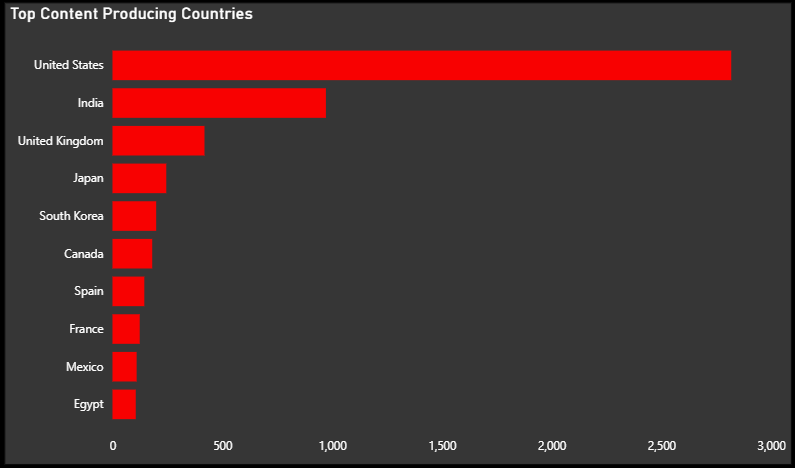
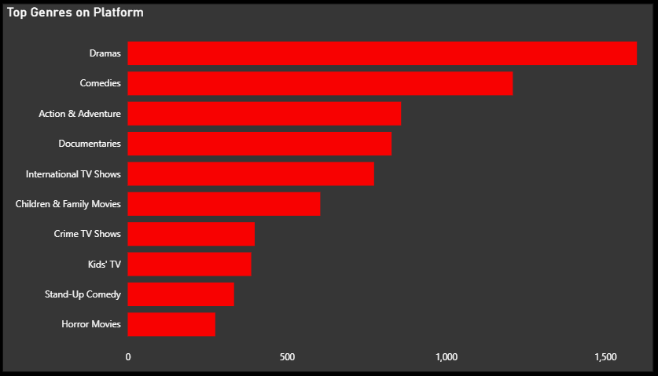
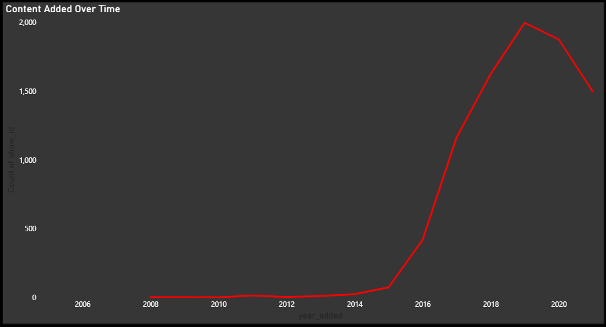

Streaming platforms rely heavily on content strategy to drive engagement. The objective of this analysis was to understand content distribution, genre trends, and release patterns within Netflix data.
The dataset contains information about Netflix titles including type, genre, country, release year, and duration. It was cleaned and preprocessed to ensure consistency and usability for analysis.
- Performed data cleaning and preprocessing using Python (Pandas)
- Conducted exploratory data analysis to identify patterns
- Created visualizations to interpret trends in content distribution
Comparison of Movies vs TV Shows on Netflix.

Identifying the most dominant genres across the platform.

Understanding how content production has evolved.

- Movies dominate the platform compared to TV Shows
- Certain genres consistently outperform others in volume
- Significant increase in content production post-2015
The findings highlight opportunities for optimizing content strategy by focusing on high-performing genres and balancing content types. Understanding release trends can also guide future investment decisions.